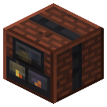
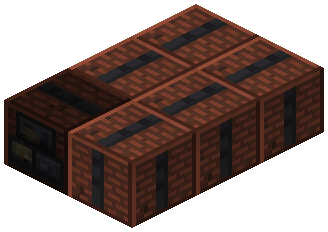

Gas Furnace


A vanilla furnace fired by gas: up to 4 items per 10 s. Gas by pipe (coke gas 100 mB per item, wood gas 200). 2x2x3 vessel.
A plain furnace, only on gas: smelts and bakes everything a vanilla furnace does (the same furnace recipes), no coal to feed. Gas goes by pipe: coke gas (coke chamber), wood gas (pyrolysis oven), petroleum gas (column, well), biogas. No kerosene, no steam. Heat per item is the same as coal in a furnace (200 Railcraft firebox ticks): 100 mB of coke gas, 200 of wood gas, 46 of petroleum gas, 13 of biogas. Gas is taken at the start of a batch; not enough for 4 - it smelts as many as it can, none at all - "no fuel".
Vessel: controller of a lying 2x2x3 vessel. Place the controller facing you - it is the bottom-left block of the end; 11 more gas furnace shells (4 per craft: 5 brick blocks + 4 iron plates) go 1 right, 1 up and 3 deep. Without the vessel it stands. Assembled, it smelts up to 4 items per 10 s (four times a vanilla furnace). Pipes and hoppers go to the ends (any of the 8 blocks of the front or back end), through the end face only; sides and roof are blind. Input by hopper into an end; the furnace puts products itself into a chest or hopper right against an end (a hopper pointing into the furnace is skipped - that is input).
Parameters
| Era | 2 — Steam and mechanics |
|---|---|
| Multiblock | no |
| Drive | own firebox |
| Tanks, mB | 16000 |
Feeds
- no Zavod machine uses its product
Assembly
Without the vessel the furnace stands. Assembled, it smelts up to 4 items per batch; gas goes by pipe into an end.

The controller — the gas furnace: place it facing you. It is the bottom-left block of the end.

Bottom row of shells: 1 to the right and 3 deep (5 blocks).

Top row — 6 more shells. The 2x2x3 vessel is done: the end comes alive. Pipes and hoppers go to the ends; sides and roof are blind.


Faded blocks were placed in earlier steps.